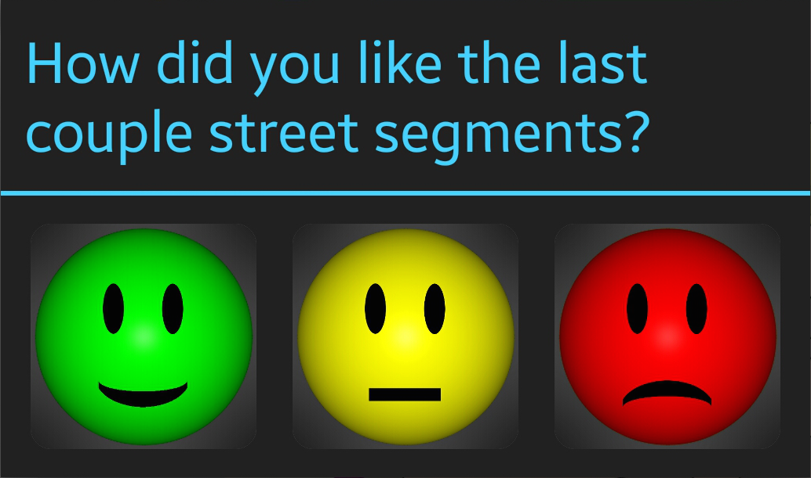

The Stress Reduction Plugin uses crowdsourcing for better routes with less stress. You can help to improve future navigation by telling us how you feel on the go.
In order to determine the perceived quality of your ride on certain road sections, your cooperation is appreciated! Each time you stop your car you can evaluate the last traveled road sections.

Please give a rating for the last traveled road sections:
- Green smiley: everything was fine
- Yellow smiley: the stress and tiring factor of the roads was medium
- Red smiley: the stress and tiring factor of the roads was high
With each review you help to improve the route calculation for future trips!
For a full description of this project visit our info page:
https://maps.hci.simtech.uni-stuttgart.de/info.
The source code can be found at GitHub:
https://github.com/weissets/happy-navi-osmand.